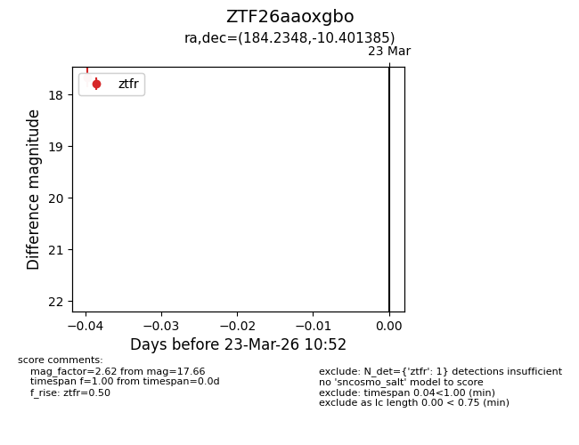
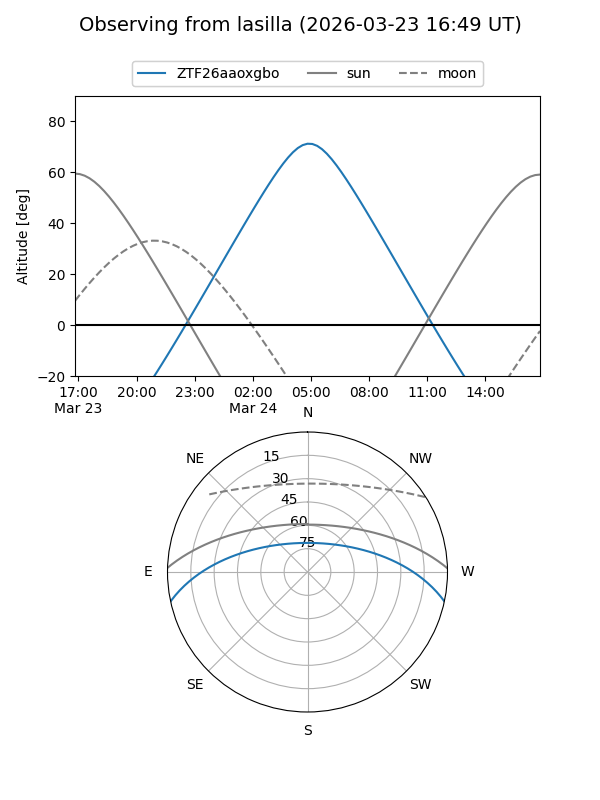
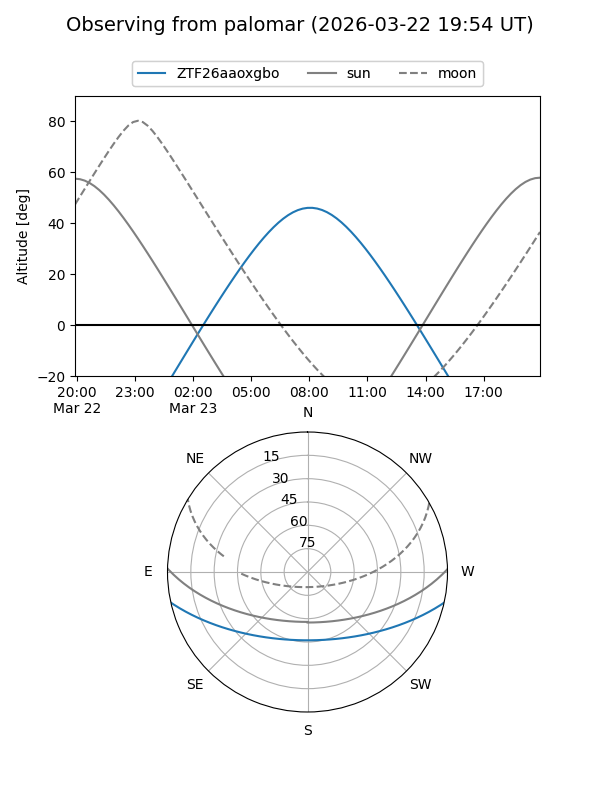

ZTF26aaoxgbo
Target ZTF26aaoxgbo at 2026-03-23 10:55
Aliases and brokers:
FINK: link
Lasair: link
ALeRCE: link
alt names
ZTF26aaoxgbo (ztf,fink_ztf)
Coordinates:
equatorial (ra, dec) = 184.2348,-10.40139
equatorial (HMS+DMS) = 12:16:56.34,-10:24:04.99
galactic (l, b) = (289.2110,+51.54893)
Flags:
Photometry:
last ztfr=17.66
1 ztfr detections
Lightcurve

Visibility


Additional plots